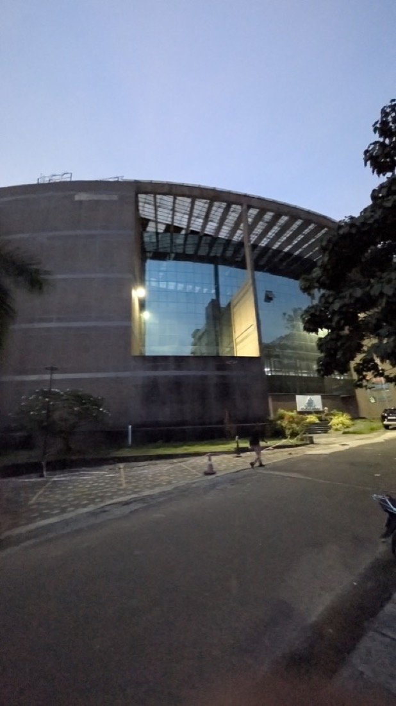
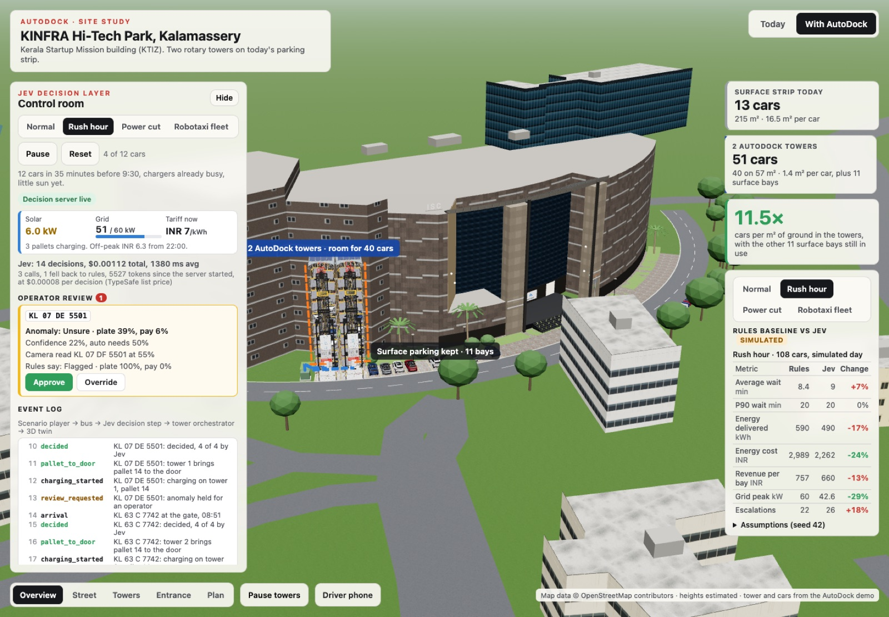
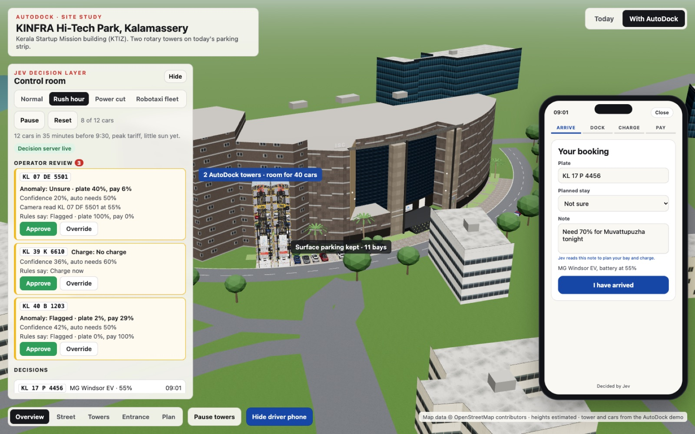

AIBoomi Startup Weekend · Problem
We are building the AI intelligence layer for smart parking, and for the autonomous parking infrastructure that comes next.
Across Kerala and India, cars and EVs outgrow parking and chargers, and cities have no spare land.
154 in Kerala (Kochi 55, Thiruvananthapuram 38, Kozhikode 22), 320 in the rest of India (Delhi NCR 55, Mumbai 43, Bengaluru 37). From Reddit, forums and news: fights over spots, EV charging, apartments, fees.
One example, KSUM Kalamassery: 15 surface bays full by mid-morning, no chargers. Drivers circle, park on the road, or leave.
Who cares: site owners with no spare land, drivers doing two errands, and fleets that will need depots.

Insight · why now
AutoDock AI (Kozhikode) already builds rotary towers with a charger in every bay. In our model a 20-pallet tower stands on 2 parking bays.
Which pallet, charge now (on solar, cheaper by day) or wait for off-peak, what price, is this the right car and is it paid for. Rules get these wrong at the edges; people can't watch every car.
TypeSafe's Jev returns typed answers with a calibrated confidence in about half a second, for about $0.00008 a decision. Cheap enough to decide on every event, and honest enough to ask a person when it isn't sure.
More EVs than sockets, and the site's grid connection is the bottleneck. Robotaxi fleets are scaling in the US, and need depots that run unattended.
Solution · live demo


Tech architecture
Confidence counts options with the same outcome together: indifference between equivalent pallets is not doubt.
React 19 · React Three Fiber · zustand · Vite · Node 25 · @typesafe-ai/sdk (jev-latest) · OpenStreetMap · SerpAPI
Value · go to market
| Rush hour, seed 42 | Rules | Jev |
|---|---|---|
| Grid peak | 60 kW | 42.6 kW (-29%) |
| Energy cost | ₹2,989 | ₹2,278 (-24%) |
| Missed anomalies | 0 | 0 |
| Sent to an operator | 22 | 21 |
| kWh delivered | 590 | 495 |
Synthetic day, illustrative tariffs and behaviour; not a measurement. Jev wins on grid and energy cost, and sells less energy. Full table in the repo.
Site owners and operators: a per-session fee, a per-bay software subscription, a margin on energy, and a revenue share with the landowner.
Through AutoDock AI as the hardware partner. First a Kerala pilot site (KSUM / KINFRA style campuses), then Kochi, Trivandrum and Kozhikode; fleets and robotaxi depots next.
Non-binding LOI drafts for AutoDock AI (shadow pilot) and a site owner (survey and proposal).
Roadmap · risks
The ask: a pilot site, an introduction to AutoDock AI's team, and mentors who have run EV or parking operations.